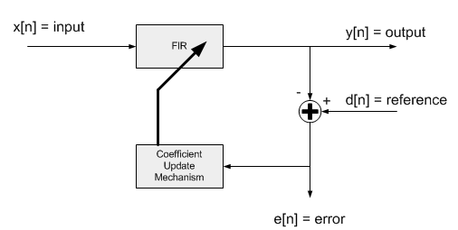

Normalized LMS Filters
- RISCV_DSP_ATTRIBUTE void riscv_lms_norm_f32 (riscv_lms_norm_instance_f32 *S, const float32_t *pSrc, float32_t *pRef, float32_t *pOut, float32_t *pErr, uint32_t blockSize)
- RISCV_DSP_ATTRIBUTE void riscv_lms_norm_init_f32 (riscv_lms_norm_instance_f32 *S, uint16_t numTaps, float32_t *pCoeffs, float32_t *pState, float32_t mu, uint32_t blockSize)
- RISCV_DSP_ATTRIBUTE void riscv_lms_norm_init_q15 (riscv_lms_norm_instance_q15 *S, uint16_t numTaps, q15_t *pCoeffs, q15_t *pState, q15_t mu, uint32_t blockSize, uint8_t postShift)
- RISCV_DSP_ATTRIBUTE void riscv_lms_norm_init_q31 (riscv_lms_norm_instance_q31 *S, uint16_t numTaps, q31_t *pCoeffs, q31_t *pState, q31_t mu, uint32_t blockSize, uint8_t postShift)
- RISCV_DSP_ATTRIBUTE void riscv_lms_norm_q15 (riscv_lms_norm_instance_q15 *S, const q15_t *pSrc, q15_t *pRef, q15_t *pOut, q15_t *pErr, uint32_t blockSize)
- RISCV_DSP_ATTRIBUTE void riscv_lms_norm_q31 (riscv_lms_norm_instance_q31 *S, const q31_t *pSrc, q31_t *pRef, q31_t *pOut, q31_t *pErr, uint32_t blockSize)
- group Normalized LMS Filters
This set of functions implements a commonly used adaptive filter. It is related to the Least Mean Square (LMS) adaptive filter and includes an additional normalization factor which increases the adaptation rate of the filter. The NMSIS DSP Library contains normalized LMS filter functions that operate on Q15, Q31, and floating-point data types.
A normalized least mean square (NLMS) filter consists of two components as shown below. The first component is a standard transversal or FIR filter. The second component is a coefficient update mechanism. The NLMS filter has two input signals. The “input” feeds the FIR filter while the “reference input” corresponds to the desired output of the FIR filter. That is, the FIR filter coefficients are updated so that the output of the FIR filter matches the reference input. The filter coefficient update mechanism is based on the difference between the FIR filter output and the reference input. This “error signal” tends towards zero as the filter adapts. The NLMS processing functions accept the input and reference input signals and generate the filter output and error signal. 
The functions operate on blocks of data and each call to the function processes
blockSizesamples through the filter.pSrcpoints to input signal,pRefpoints to reference signal,pOutpoints to output signal andpErrpoints to error signal. All arrays containblockSizevalues.The functions operate on a block-by-block basis. Internally, the filter coefficients
b[n]are updated on a sample-by-sample basis. The convergence of the LMS filter is slower compared to the normalized LMS algorithm.- Algorithm
The output signal
y[n]is computed by a standard FIR filter:The error signal equals the difference between the reference signal
d[n]and the filter output:After each sample of the error signal is computed the instanteous energy of the filter state variables is calculated: The filter coefficients
b[k]are then updated on a sample-by-sample basis: wheremuis the step size and controls the rate of coefficient convergence.In the APIs,
pCoeffspoints to a coefficient array of sizenumTaps. Coefficients are stored in time reversed order.pStatepoints to a state array of sizenumTaps + blockSize - 1. Samples in the state buffer are stored in the order:Note that the length of the state buffer exceeds the length of the coefficient array by
blockSize-1samples. The increased state buffer length allows circular addressing, which is traditionally used in FIR filters, to be avoided and yields a significant speed improvement. The state variables are updated after each block of data is processed.- Instance Structure
The coefficients and state variables for a filter are stored together in an instance data structure. A separate instance structure must be defined for each filter and coefficient and state arrays cannot be shared among instances. There are separate instance structure declarations for each of the 3 supported data types.
- Initialization Functions
There is also an associated initialization function for each data type. The initialization function performs the following operations:
Sets the values of the internal structure fields.
Zeros out the values in the state buffer. To do this manually without calling the init function, assign the follow subfields of the instance structure: numTaps, pCoeffs, mu, energy, x0, pState. Also set all of the values in pState to zero. For Q7, Q15, and Q31 the following fields must also be initialized; recipTable, postShift
Instance structure cannot be placed into a const data section and it is recommended to use the initialization function.
- Fixed-Point Behavior
Care must be taken when using the Q15 and Q31 versions of the normalised LMS filter. The following issues must be considered:
Scaling of coefficients
Overflow and saturation
- Scaling of Coefficients (fixed point versions)
Filter coefficients are represented as fractional values and coefficients are restricted to lie in the range
[-1 +1). The fixed-point functions have an additional scaling parameterpostShift. At the output of the filter’s accumulator is a shift register which shifts the result bypostShiftbits. This essentially scales the filter coefficients by2^postShiftand allows the filter coefficients to exceed the range[+1 -1). The value ofpostShiftis set by the user based on the expected gain through the system being modeled.- Overflow and Saturation (fixed point versions)
Overflow and saturation behavior of the fixed-point Q15 and Q31 versions are described separately as part of the function specific documentation below.
Functions
- RISCV_DSP_ATTRIBUTE void riscv_lms_norm_f32 (riscv_lms_norm_instance_f32 *S, const float32_t *pSrc, float32_t *pRef, float32_t *pOut, float32_t *pErr, uint32_t blockSize)
Processing function for floating-point normalized LMS filter.
- Parameters:
S – [in] points to an instance of the floating-point normalized LMS filter structure
pSrc – [in] points to the block of input data
pRef – [in] points to the block of reference data
pOut – [out] points to the block of output data
pErr – [out] points to the block of error data
blockSize – [in] number of samples to process
- RISCV_DSP_ATTRIBUTE void riscv_lms_norm_init_f32 (riscv_lms_norm_instance_f32 *S, uint16_t numTaps, float32_t *pCoeffs, float32_t *pState, float32_t mu, uint32_t blockSize)
Initialization function for floating-point normalized LMS filter.
- Details
pCoeffspoints to the array of filter coefficients stored in time reversed order: The initial filter coefficients serve as a starting point for the adaptive filter.pStatepoints to an array of lengthnumTaps+blockSize-1samples, whereblockSizeis the number of input samples processed by each call toriscv_lms_norm_f32().
- Parameters:
S – [in] points to an instance of the floating-point LMS filter structure
numTaps – [in] number of filter coefficients
pCoeffs – [in] points to coefficient buffer
pState – [in] points to state buffer
mu – [in] step size that controls filter coefficient updates
blockSize – [in] number of samples to process
- RISCV_DSP_ATTRIBUTE void riscv_lms_norm_init_q15 (riscv_lms_norm_instance_q15 *S, uint16_t numTaps, q15_t *pCoeffs, q15_t *pState, q15_t mu, uint32_t blockSize, uint8_t postShift)
Initialization function for Q15 normalized LMS filter.
- Details
pCoeffspoints to the array of filter coefficients stored in time reversed order: The initial filter coefficients serve as a starting point for the adaptive filter.pStatepoints to the array of state variables and size of array isnumTaps+blockSize-1samples, whereblockSizeis the number of input samples processed by each call toriscv_lms_norm_q15().
- Parameters:
S – [in] points to an instance of the Q15 normalized LMS filter structure.
numTaps – [in] number of filter coefficients.
pCoeffs – [in] points to coefficient buffer.
pState – [in] points to state buffer.
mu – [in] step size that controls filter coefficient updates.
blockSize – [in] number of samples to process.
postShift – [in] bit shift applied to coefficients.
- RISCV_DSP_ATTRIBUTE void riscv_lms_norm_init_q31 (riscv_lms_norm_instance_q31 *S, uint16_t numTaps, q31_t *pCoeffs, q31_t *pState, q31_t mu, uint32_t blockSize, uint8_t postShift)
Initialization function for Q31 normalized LMS filter.
- Details
pCoeffspoints to the array of filter coefficients stored in time reversed order: The initial filter coefficients serve as a starting point for the adaptive filter.pStatepoints to an array of lengthnumTaps+blockSize-1samples, whereblockSizeis the number of input samples processed by each call toriscv_lms_norm_q31().
- Parameters:
S – [in] points to an instance of the Q31 normalized LMS filter structure.
numTaps – [in] number of filter coefficients.
pCoeffs – [in] points to coefficient buffer.
pState – [in] points to state buffer.
mu – [in] step size that controls filter coefficient updates.
blockSize – [in] number of samples to process.
postShift – [in] bit shift applied to coefficients.
- RISCV_DSP_ATTRIBUTE void riscv_lms_norm_q15 (riscv_lms_norm_instance_q15 *S, const q15_t *pSrc, q15_t *pRef, q15_t *pOut, q15_t *pErr, uint32_t blockSize)
Processing function for Q15 normalized LMS filter.
- Scaling and Overflow Behavior
The function is implemented using a 64-bit internal accumulator. Both coefficients and state variables are represented in 1.15 format and multiplications yield a 2.30 result. The 2.30 intermediate results are accumulated in a 64-bit accumulator in 34.30 format. There is no risk of internal overflow with this approach and the full precision of intermediate multiplications is preserved. After all additions have been performed, the accumulator is truncated to 34.15 format by discarding low 15 bits. Lastly, the accumulator is saturated to yield a result in 1.15 format.
In this filter, filter coefficients are updated for each sample and the updation of filter cofficients are saturted.
- Parameters:
S – [in] points to an instance of the Q15 normalized LMS filter structure
pSrc – [in] points to the block of input data
pRef – [in] points to the block of reference data
pOut – [out] points to the block of output data
pErr – [out] points to the block of error data
blockSize – [in] number of samples to process
- RISCV_DSP_ATTRIBUTE void riscv_lms_norm_q31 (riscv_lms_norm_instance_q31 *S, const q31_t *pSrc, q31_t *pRef, q31_t *pOut, q31_t *pErr, uint32_t blockSize)
Processing function for Q31 normalized LMS filter.
- Scaling and Overflow Behavior
The function is implemented using an internal 64-bit accumulator. The accumulator has a 2.62 format and maintains full precision of the intermediate multiplication results but provides only a single guard bit. Thus, if the accumulator result overflows it wraps around rather than clip. In order to avoid overflows completely the input signal must be scaled down by log2(numTaps) bits. The reference signal should not be scaled down. After all multiply-accumulates are performed, the 2.62 accumulator is shifted and saturated to 1.31 format to yield the final result. The output signal and error signal are in 1.31 format.
In this filter, filter coefficients are updated for each sample and the updation of filter cofficients are saturted.
- Parameters:
S – [in] points to an instance of the Q31 normalized LMS filter structure
pSrc – [in] points to the block of input data
pRef – [in] points to the block of reference data
pOut – [out] points to the block of output data
pErr – [out] points to the block of error data
blockSize – [in] number of samples to process